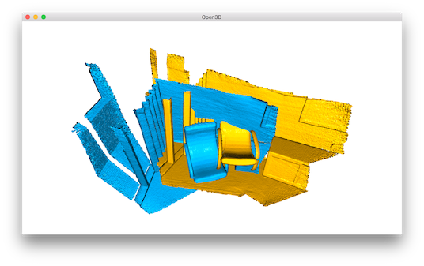
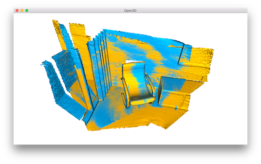

Interactive visualization¶
This tutorial introduces user interaction features of visualizer window.
5 6 7 8 9 10 11 12 13 14 15 16 17 18 19 20 21 22 23 24 25 26 27 28 29 30 31 32 33 34 35 36 37 38 39 40 41 42 43 44 45 46 47 48 49 50 51 52 53 54 55 56 57 58 59 60 61 62 63 64 65 66 67 68 69 70 71 72 73 74 75 76 77 78 79 80 81 82 83 84 85 | # examples/Python/Advanced/interactive_visualization.py
import numpy as np
import copy
import open3d as o3d
def demo_crop_geometry():
print("Demo for manual geometry cropping")
print(
"1) Press 'Y' twice to align geometry with negative direction of y-axis"
)
print("2) Press 'K' to lock screen and to switch to selection mode")
print("3) Drag for rectangle selection,")
print(" or use ctrl + left click for polygon selection")
print("4) Press 'C' to get a selected geometry and to save it")
print("5) Press 'F' to switch to freeview mode")
pcd = o3d.io.read_point_cloud("../../TestData/ICP/cloud_bin_0.pcd")
o3d.visualization.draw_geometries_with_editing([pcd])
def draw_registration_result(source, target, transformation):
source_temp = copy.deepcopy(source)
target_temp = copy.deepcopy(target)
source_temp.paint_uniform_color([1, 0.706, 0])
target_temp.paint_uniform_color([0, 0.651, 0.929])
source_temp.transform(transformation)
o3d.visualization.draw_geometries([source_temp, target_temp])
def pick_points(pcd):
print("")
print(
"1) Please pick at least three correspondences using [shift + left click]"
)
print(" Press [shift + right click] to undo point picking")
print("2) Afther picking points, press q for close the window")
vis = o3d.visualization.VisualizerWithEditing()
vis.create_window()
vis.add_geometry(pcd)
vis.run() # user picks points
vis.destroy_window()
print("")
return vis.get_picked_points()
def demo_manual_registration():
print("Demo for manual ICP")
source = o3d.io.read_point_cloud("../../TestData/ICP/cloud_bin_0.pcd")
target = o3d.io.read_point_cloud("../../TestData/ICP/cloud_bin_2.pcd")
print("Visualization of two point clouds before manual alignment")
draw_registration_result(source, target, np.identity(4))
# pick points from two point clouds and builds correspondences
picked_id_source = pick_points(source)
picked_id_target = pick_points(target)
assert (len(picked_id_source) >= 3 and len(picked_id_target) >= 3)
assert (len(picked_id_source) == len(picked_id_target))
corr = np.zeros((len(picked_id_source), 2))
corr[:, 0] = picked_id_source
corr[:, 1] = picked_id_target
# estimate rough transformation using correspondences
print("Compute a rough transform using the correspondences given by user")
p2p = o3d.registration.TransformationEstimationPointToPoint()
trans_init = p2p.compute_transformation(source, target,
o3d.utility.Vector2iVector(corr))
# point-to-point ICP for refinement
print("Perform point-to-point ICP refinement")
threshold = 0.03 # 3cm distance threshold
reg_p2p = o3d.registration.registration_icp(
source, target, threshold, trans_init,
o3d.registration.TransformationEstimationPointToPoint())
draw_registration_result(source, target, reg_p2p.transformation)
print("")
if __name__ == "__main__":
demo_crop_geometry()
demo_manual_registration()
|
This script executes two applications of user interaction: demo_crop_geometry() and demo_manual_registration().
Crop geometry¶
12 13 14 15 16 17 18 19 20 21 22 23 | def demo_crop_geometry():
print("Demo for manual geometry cropping")
print(
"1) Press 'Y' twice to align geometry with negative direction of y-axis"
)
print("2) Press 'K' to lock screen and to switch to selection mode")
print("3) Drag for rectangle selection,")
print(" or use ctrl + left click for polygon selection")
print("4) Press 'C' to get a selected geometry and to save it")
print("5) Press 'F' to switch to freeview mode")
pcd = o3d.io.read_point_cloud("../../TestData/ICP/cloud_bin_0.pcd")
o3d.visualization.draw_geometries_with_editing([pcd])
|
This function simply reads a point cloud and calls draw_geometries_with_editing. This function provides vertex selection and cropping.
Note
Open3D has VisualizerWithEditing class that inherits Visualizer class. It adds graphic user interaction feature. Likewise examples in Customized visualization, VisualizerWithEditing() can be explicitly used instead draw_geometries_with_editing([pcd]).
Once a geometry is displayed, press Y twice to align geometry with negative direction of y-axis. After adjusting viewing orientation, press K to lock screen and to switch to the selection mode.
{kind=link}
Tip
The practical step for selecting area is to align the geometry with arbitrary axis using orthographic projection model. This trick makes selection easier, because it avoids self-occlusion hassle due to perspective projection.
To select a region, use either mouse drag (rectangle selection) or ctrl + left mouse click (polygon selection). The below example shows a selected area using a polygon.
{kind=link}
Note that the selected area is dark shaded. To keep the selected area and discard the rest, press C. It pops up a dialog box to save cropped geometry. Cropping result is shown after saving.
{kind=link}
{kind=link}
To finish selection mode, press F to switch to freeview mode.
{kind=link}
Manual registration¶
Select correspondences¶
The following script register two point clouds using point-to-point ICP. It gets initial alignment via user interaction.
51 52 53 54 55 56 57 58 59 60 | def demo_manual_registration():
print("Demo for manual ICP")
source = o3d.io.read_point_cloud("../../TestData/ICP/cloud_bin_0.pcd")
target = o3d.io.read_point_cloud("../../TestData/ICP/cloud_bin_2.pcd")
print("Visualization of two point clouds before manual alignment")
draw_registration_result(source, target, np.identity(4))
# pick points from two point clouds and builds correspondences
picked_id_source = pick_points(source)
picked_id_target = pick_points(target)
|
The script reads two point clouds, and visualize the point clouds before alignment.
{kind=link}
35 36 37 38 39 40 41 42 43 44 45 46 47 48 | def pick_points(pcd):
print("")
print(
"1) Please pick at least three correspondences using [shift + left click]"
)
print(" Press [shift + right click] to undo point picking")
print("2) Afther picking points, press q for close the window")
vis = o3d.visualization.VisualizerWithEditing()
vis.create_window()
vis.add_geometry(pcd)
vis.run() # user picks points
vis.destroy_window()
print("")
return vis.get_picked_points()
|
Function pick_points(pcd) makes an instance of VisualizerWithEditing. To mimic draw_geometries, it creates windows, adds geometry, visualize geometry, and terminates. A novel interface function from VisualizerWithEditing is get_picked_points() that returns the indices of user-picked vertices.
To pick a vertex, press shift + left click on a window. If a vertex is selected, the visualizer window overlays a sphere on a selected vertex. For example, after picking three vertices in the source point cloud, it shows:
{kind=link}
This will print:
Picked point #58481 (2.14, 1.56, 1.53) to add in queue.
Picked point #77321 (2.86, 1.92, 1.09) to add in queue.
Picked point #42639 (3.28, 1.53, 1.45) to add in queue.
Press q to close window. The next step is to pick the same correspondences in the target point cloud. The color of sphere helps to identify the same correspondence.
{kind=link}
This will print:
Picked point #54028 (1.62, 1.81, 1.23) to add in queue.
Picked point #97115 (2.45, 2.19, 1.11) to add in queue.
Picked point #47467 (2.75, 1.71, 1.45) to add in queue.
Tip
To get a good registration result, try to pick more than three points that are well-distributed in the scene. Using a vertex on the corner region is a good way to easily pick the right correspondence.
Registration using user correspondences¶
61 62 63 64 65 66 67 68 69 70 71 72 73 74 75 76 77 78 79 80 | assert (len(picked_id_source) >= 3 and len(picked_id_target) >= 3)
assert (len(picked_id_source) == len(picked_id_target))
corr = np.zeros((len(picked_id_source), 2))
corr[:, 0] = picked_id_source
corr[:, 1] = picked_id_target
# estimate rough transformation using correspondences
print("Compute a rough transform using the correspondences given by user")
p2p = o3d.registration.TransformationEstimationPointToPoint()
trans_init = p2p.compute_transformation(source, target,
o3d.utility.Vector2iVector(corr))
# point-to-point ICP for refinement
print("Perform point-to-point ICP refinement")
threshold = 0.03 # 3cm distance threshold
reg_p2p = o3d.registration.registration_icp(
source, target, threshold, trans_init,
o3d.registration.TransformationEstimationPointToPoint())
draw_registration_result(source, target, reg_p2p.transformation)
print("")
|
The later part of the demo computes an initial transformation based on the user-provided correspondences. This script builds pairs of correspondences using Vector2iVector(corr). It utilizes TransformationEstimationPointToPoint.compute_transformation to compute the initial transformation from the correspondences. The initial transformation is refined using registration_icp.
The registration result follows:
{kind=link}